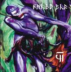

| Artist: | Naked Elf |
| Title: | YI |
| Label: | Smiley Jones Records SJ006 |
| Length(s): | 61 minutes |
| Year(s) of release: | 2002 |
| Month of review: | [01/2003] |
| 1) | Books Of Bokonon | 7.20 |
| 2) | Stew | 3.06 |
| 3) | Electric Bread | 4.40 |
| 4) | In The Domain Of The Dread Dormannu | 7.33 |
| 5) | The Transmigration Of Mr. Natural | 2.22 |
| 6) | Malphus Inaugurated | 3.46 |
| 7) | CircuSSS-the Performing Bestiary | 2.38 |
| 8) | Enter The Grand Vizier | 3.35 |
| 9) | Socks, Clocks | 4.39 |
| 10) | The Dark Cone Of Orodruin | 13.54 |
| 11) | Orion: New Genesis | 7.24 |